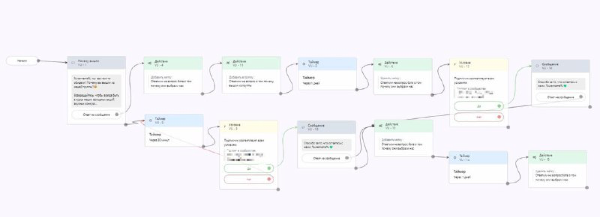

Как вернуть 24,4% отписавшихся за 60 минут: бот для удержания и CustDev в Senler
Инструменты
Senler, ВКонтакте, чат-боты, триггерные сценарии, CustDev-опросы, метки аудиторий
Результат в цифрах за 12 месяцев
- Возврат подписчиков
- 24,4%
- 1 056 человек вернулись в группу обратно
- Стоимость возврата
- 0 ₽
- Без платного ретаргетинга и ручных звонков
- Качественные ответы (CustDev)
- 248 чел.
- Честно объяснили причину ухода из группы
- Время на внедрение
- 60 минут
- Собрано в Senler без разработчиков и кода

1. Проблема: подписчики уходят, бюджет сгорает
Привлечение подписчиков в сообщество доставки еды стоит денег: таргет VK Ads, конкурсы, блогеры, промо-акции. Но большинство компаний страдают от «эсперанто-маркетинга» — отслеживают только приток в группу, совершенно не замечая оттока (Churn Rate).
Люди отписываются молча: маркетолог видит минус по подписчикам и гадает на кофейной гуще — то ли контент плохой, то ли цены высокие, то ли курьер опоздал. В итоге на привлечение тратятся сотни тысяч рублей, а «дыра в ведре» остаётся незакрытой.
Задача стояла просто: без бюджетов на разработку и сложных интеграций остановить волну отписок, понять реальные причины ухода и вернуть максимальное число людей.
2. Решение: чат-бот возврата за 60 минут
Вместо многомесячной разработки CRM-модулей решение собрали за час в конструкторе Senler:
1. Мгновенный триггер отписки
Как только пользователь нажимает «Отписаться», бот перехватывает событие и мгновенно отправляет вежливое персонализированное сообщение в ЛС от группы.
2. Человечный диалог вместо робота
Сообщение без официоза: «%username%, мы вас чем-то обидели? Почему вы вышли из нашей группы? 🥺 Возвращайтесь, чтобы быть в курсе вкусных акций...»
3. Фиксация показаний в CRM
Если пользователь отвечает, бот сохраняет текст ответа в переменную и присваивает метку «Ответили на вопрос бота о выходе» для последующей сегментации.
4. Валидация и дожим возврата
Через таймеры (30 минут и 1 день) бот проверяет условие «Состоит ли в сообществе». Если вернулся — отправляет теплое сообщение: «Спасибо, что вы с нами! 💚».
3. Итоги в цифрах за 12 месяцев
За год непрерывной работы связка показала феноменальную конверсию в возврат:
- 4 328 человек отписались от сообщества за период.
- 1 056 подписчиков (24,4%) вернулись обратно в группу после первого же сообщения бота.
- 248 человек честно написали развёрнутый ответ, почему они решили уйти.
- Остальные проигнорировали сообщение, но не пожаловались на спам, так как сообщение приходило единожды и строго по факту действия.
Экономический эффект: 1 056 сохранённых подписчиков эквивалентны экономии более 80 000 — 100 000 ₽ рекламного бюджета на повторное привлечение аудитории с холодного трафика.
4. Топ-3 инсайта для бизнеса из CustDev-ответов
248 ответов дали компании бесплатную и предельно честную аналитику продукта и сервиса, которую невозможно получить в обычных NPS-опросах:
Естественный географический отток из региона. Это позволило очистить ожидания и понять, что почти треть отписок не связана с качеством еды или сервиса.
Критический инсайт для менеджмента: при индексации цен компания не донесла ценность изменений до клиентов. Ввели практику постепенного ввода новинок и компенсационных комбо-предложений.
Сигнал SMM-отделу о перегрузе ленты. Скорректировали контент-план: уменьшили количество проходных постов, перешли на дайджесты и повысили ценность каждого выхода.
Главный вывод
Retention — это не сложные нейросети и не миллионные бюджеты. В 90% случаев достаточно вовремя задать клиенту один простой человеческий вопрос: «Мы вас чем-то обидели?». Каждый четвёртый готов дать бизнесу второй шанс, если видит неравнодушие.